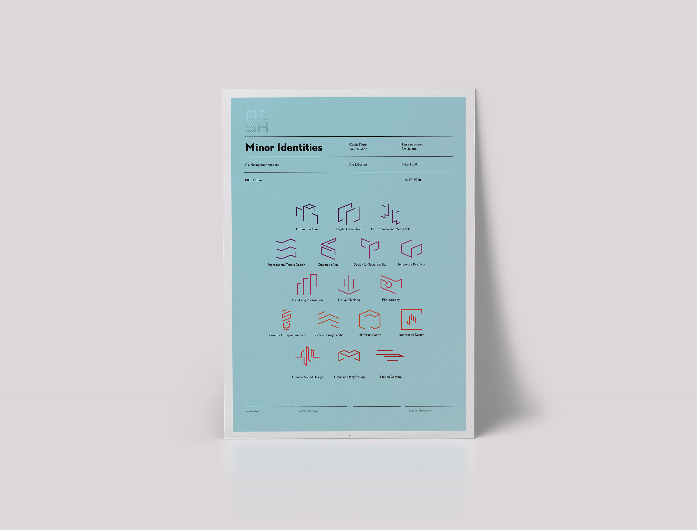

MESH is a collaborative platform connecting multiple disciplines across the School of Art + Design at AUT University. MESH currently offers 15 minors, providing students with the opportunity to explore other disciplines as part of their design degree.
This was a collaborative project to showcase the crossover of multiple disciplines under MESH and sub-brand each unique minor pathway.
With a team of four Information design students, a video telling the story of how MESH came to be was developed. To support this information graphics showing the ‘MESH’ or in other words collaborative crossover between different design disciplines were curated and designed. We also highlighted the wide selection of minors available under MESH through a sub-brand of each minor pathway, developing a cohesive set of icons that best reflected each minor.
The final video and artifacts were displayed as part of the 2016 MESH Open at AUT on June 10 2016.
Cassie Khoo
Tim van Eyssen
Breidi Jane
Sumen Chen